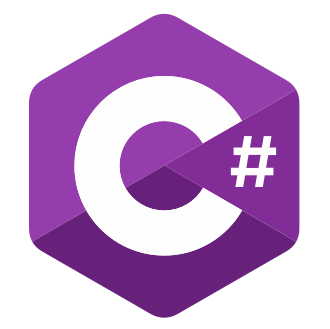
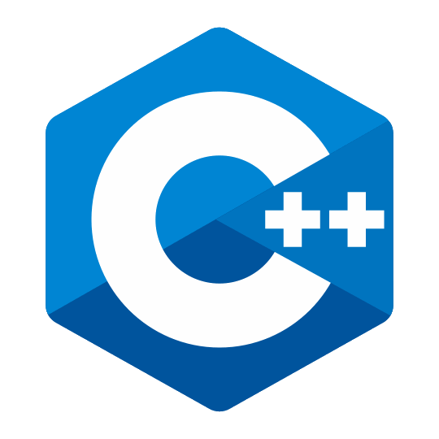
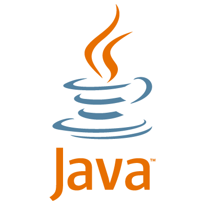

interesses




Het reden dat ik nu studereer in Informatica Beheer is omdat het coderen mij passioneert. Sinds mijn 3e jaar in het Heilige Familie te Ieper heb ik er alles voor gedaan om in deze richting te geraken en daarna verder te studeren.
Wat ik het leukste vind in informatica is het coderen met bv: c# of Java. Het probleemoplossend denken voor een bepaalde opdracht vind ik heel leuk en zal ik altijd heel veel werk steken in mijn taken en projecten. Maar webdesign vind ik echter ook heel leuk om op een creative manier iets te maken met code.